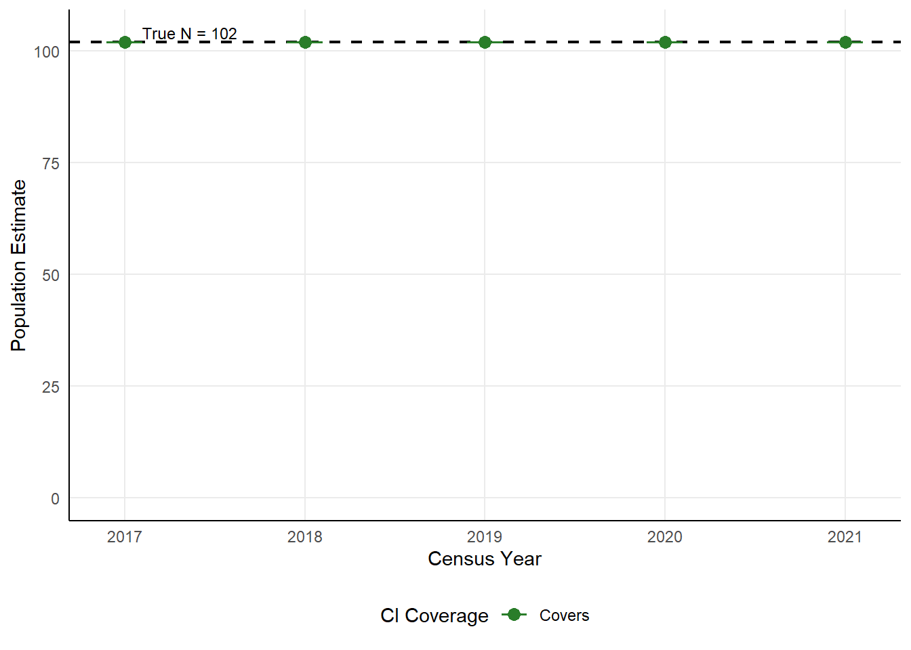
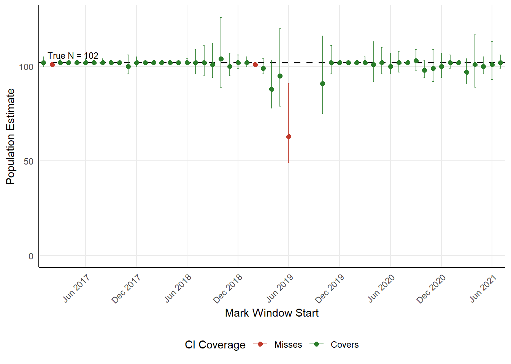

| Year | M | C | R | N-hat | 95% CI | CI Covers |
|---|---|---|---|---|---|---|
| 2017 | 102 | 102 | 102 | 102 | 102 – 102 | Yes |
| 2018 | 102 | 102 | 102 | 102 | 102 – 102 | Yes |
| 2019 | 102 | 102 | 102 | 102 | 102 – 102 | Yes |
| 2020 | 102 | 102 | 102 | 102 | 102 – 102 | Yes |
| 2021 | 102 | 27 | 27 | 102 | 102 – 102 | Yes |
Chapman Estimator Validation — IPCA Pond 1 (2016 Cohort)
Bootstrap confidence interval coverage against a confirmed long-term survivor population
Overview
This document validates the Chapman (1951) mark-recapture estimator and its associated bootstrap confidence intervals at Imperial Ponds Conservation Area Pond 1 (IPCA Pond 1), using a fixed, known true population as the benchmark.
True population definition. From the 2016 Razorback Sucker (Xyrauchen texanus) stocking cohort (N = 300 fish), those with a passive PIT antenna contact on or after January 1, 2022 are classified as confirmed long-term survivors. Because IPCA Pond 1 is a closed off-channel habitat with continuous passive scanning, any fish contacted in 2022 or later was necessarily present and alive throughout the entire 2017–2021 period. This group constitutes the fixed, known true population (N = 102) against which all Chapman estimates are compared.
What is being estimated. Mark and capture periods in each analysis window draw exclusively from the scanning records of this confirmed survivor group. The Chapman estimator is therefore being asked to recover a known fixed N from repeated subsamples of that group’s detection history — a direct test of estimator accuracy and confidence interval coverage.
Note
The total known survivor count at IPCA Pond 1 during the validation period (2017–2021) includes naturally recruited fish and exceeds the stocking cohort alone. The validated population here is solely the 2016 stocking cohort subset confirmed alive through 2022 — not the total pond population. The Chapman estimator is evaluated on its ability to recover this fixed sub-population’s size from repeated passive scanner contacts of that specific group.
Two temporal scales are examined:
- Annual — standard Jan–Feb marking and Oct–Apr capture periods for census years 2017–2021.
- Sub-annual — rolling 30-day marking and capture windows, back-to-back (capture starts 30 days after mark start), stepping forward one month at a time throughout 2017–2021.
Confirmed Survivor Cohort
Of 300 fish stocked in 2016, 102 have a recorded passive antenna contact on or after January 1, 2022, confirming their presence through 2021. Their passive scanning record from December 15, 2016 through March 06, 2026 is used for all estimation windows below.
Annual Validation (2017–2021)
The standard project mark-recapture protocol is applied: the marking period is January 1 – February 28 of the census year; the capture period is October 1 of the census year through April 30 of the following year. The fixed true N of 102 is the benchmark for all years.
Results Table
Coverage Plot

Summary
The 95% bootstrap CI covered the true N of 102 in 5 of 5 census years (100%). In 5 of the 5 years (2017, 2018, 2019, 2020, 2021), all fish contacted in the capture period had also been marked (R = C), which causes the Chapman formula to simplify algebraically to N̂ = M — the estimator returns exactly the number of marked fish regardless of C. In these years the bootstrap CI is degenerate (zero width) because every bootstrap replicate draws from Binomial(C, p = R/C = 1), always returning R’ = C and thus N̂’ = M. This is expected behavior: near-perfect detection removes variability from the estimator rather than inflating it. The 2021 capture period (Oct 2021–Apr 2022) shows substantially lower detection (C = 27, R = 27), consistent with a scanner coverage gap during that window; despite this, the Chapman estimate and CI coverage remained correct because R = C still held.
Sub-Annual Validation — Rolling 30-Day Windows
Mark and capture windows are each 30 days, with the capture window starting 30 days after the start of the mark window (windows are back-to-back with no overlap). Windows step forward one month at a time from January 2017 through September 2021. The true N remains fixed at 102 for every window.
Of 57 rolling windows evaluated, 5 were excluded due to R ≤ 3 (insufficient recaptures, primarily from scanner gaps), leaving 52 windows for analysis.
Coverage Plot

Per-Window Results Table
| Mark Window | M | C | R | N | 95% CI | Covers |
|---|---|---|---|---|---|---|
| Jan 01 – Jan 30, 2017 – Cap: Jan 31 – Mar 01 | 100 | 101 | 99 | 102 | 100 – 105 | Yes |
| Feb 01 – Mar 02, 2017 – Cap: Mar 03 – Apr 01 | 101 | 100 | 100 | 101 | 101 – 101 | No |
| Mar 01 – Mar 30, 2017 – Cap: Mar 31 – Apr 29 | 101 | 102 | 101 | 102 | 101 – 104 | Yes |
| Apr 01 – Apr 30, 2017 – Cap: May 01 – May 30 | 102 | 102 | 102 | 102 | 102 – 102 | Yes |
| May 01 – May 30, 2017 – Cap: May 31 – Jun 29 | 102 | 101 | 101 | 102 | 102 – 102 | Yes |
| Jun 01 – Jun 30, 2017 – Cap: Jul 01 – Jul 30 | 101 | 102 | 101 | 102 | 101 – 104 | Yes |
| Jul 01 – Jul 30, 2017 – Cap: Jul 31 – Aug 29 | 102 | 101 | 101 | 102 | 102 – 102 | Yes |
| Aug 01 – Aug 30, 2017 – Cap: Aug 31 – Sep 29 | 101 | 102 | 101 | 102 | 101 – 104 | Yes |
| Sep 01 – Sep 30, 2017 – Cap: Oct 01 – Oct 30 | 102 | 102 | 102 | 102 | 102 – 102 | Yes |
| Oct 01 – Oct 30, 2017 – Cap: Oct 31 – Nov 29 | 102 | 97 | 97 | 102 | 102 – 102 | Yes |
| Nov 01 – Nov 30, 2017 – Cap: Dec 01 – Dec 30 | 95 | 100 | 95 | 100 | 96 – 106 | Yes |
| Dec 01 – Dec 30, 2017 – Cap: Dec 31 – Jan 29 | 100 | 102 | 100 | 102 | 100 – 105 | Yes |
| Jan 01 – Jan 30, 2018 – Cap: Jan 31 – Mar 01 | 102 | 102 | 102 | 102 | 102 – 102 | Yes |
| Feb 01 – Mar 02, 2018 – Cap: Mar 03 – Apr 01 | 102 | 102 | 102 | 102 | 102 – 102 | Yes |
| Mar 01 – Mar 30, 2018 – Cap: Mar 31 – Apr 29 | 102 | 102 | 102 | 102 | 102 – 102 | Yes |
| Apr 01 – Apr 30, 2018 – Cap: May 01 – May 30 | 102 | 102 | 102 | 102 | 102 – 102 | Yes |
| May 01 – May 30, 2018 – Cap: May 31 – Jun 29 | 102 | 101 | 101 | 102 | 102 – 102 | Yes |
| Jun 01 – Jun 30, 2018 – Cap: Jul 01 – Jul 30 | 101 | 93 | 92 | 102 | 101 – 104 | Yes |
| Jul 01 – Jul 30, 2018 – Cap: Jul 31 – Aug 29 | 93 | 88 | 80 | 102 | 96 – 109 | Yes |
| Aug 01 – Aug 30, 2018 – Cap: Aug 31 – Sep 29 | 90 | 91 | 80 | 102 | 95 – 111 | Yes |
| Sep 01 – Sep 30, 2018 – Cap: Oct 01 – Oct 30 | 91 | 59 | 53 | 101 | 94 – 112 | Yes |
| Oct 01 – Oct 30, 2018 – Cap: Oct 31 – Nov 29 | 59 | 90 | 51 | 104 | 89 – 126 | Yes |
| Nov 01 – Nov 30, 2018 – Cap: Dec 01 – Dec 30 | 91 | 98 | 89 | 100 | 95 – 107 | Yes |
| Dec 01 – Dec 30, 2018 – Cap: Dec 31 – Jan 29 | 98 | 101 | 97 | 102 | 99 – 106 | Yes |
| Jan 01 – Jan 30, 2019 – Cap: Jan 31 – Mar 01 | 100 | 101 | 99 | 102 | 100 – 105 | Yes |
| Feb 01 – Mar 02, 2019 – Cap: Mar 03 – Apr 01 | 101 | 95 | 95 | 101 | 101 – 101 | No |
| Mar 01 – Mar 30, 2019 – Cap: Mar 31 – Apr 29 | 96 | 66 | 64 | 99 | 96 – 104 | Yes |
| Apr 01 – Apr 30, 2019 – Cap: May 01 – May 30 | 68 | 61 | 47 | 88 | 78 – 103 | Yes |
| May 01 – May 30, 2019 – Cap: May 31 – Jun 29 | 61 | 44 | 28 | 95 | 79 – 120 | Yes |
| Jun 01 – Jun 30, 2019 – Cap: Jul 01 – Jul 30 | 45 | 13 | 9 | 63 | 49 – 91 | No |
| Oct 01 – Oct 30, 2019 – Cap: Oct 31 – Nov 29 | 42 | 89 | 41 | 91 | 75 – 116 | Yes |
| Nov 01 – Nov 30, 2019 – Cap: Dec 01 – Dec 30 | 90 | 102 | 90 | 102 | 96 – 111 | Yes |
| Dec 01 – Dec 30, 2019 – Cap: Dec 31 – Jan 29 | 102 | 102 | 102 | 102 | 102 – 102 | Yes |
| Jan 01 – Jan 30, 2020 – Cap: Jan 31 – Feb 29 | 102 | 102 | 102 | 102 | 102 – 102 | Yes |
| Feb 01 – Mar 01, 2020 – Cap: Mar 02 – Mar 31 | 102 | 101 | 101 | 102 | 102 – 102 | Yes |
| Mar 01 – Mar 30, 2020 – Cap: Mar 31 – Apr 29 | 101 | 80 | 79 | 102 | 101 – 105 | Yes |
| Apr 01 – Apr 30, 2020 – Cap: May 01 – May 30 | 81 | 92 | 74 | 101 | 92 – 113 | Yes |
| May 01 – May 30, 2020 – Cap: May 31 – Jun 29 | 92 | 92 | 83 | 102 | 96 – 110 | Yes |
| Jun 01 – Jun 30, 2020 – Cap: Jul 01 – Jul 30 | 93 | 94 | 87 | 100 | 96 – 107 | Yes |
| Jul 01 – Jul 30, 2020 – Cap: Jul 31 – Aug 29 | 94 | 102 | 94 | 102 | 97 – 108 | Yes |
| Aug 01 – Aug 30, 2020 – Cap: Aug 31 – Sep 29 | 102 | 98 | 98 | 102 | 102 – 102 | Yes |
| Sep 01 – Sep 30, 2020 – Cap: Oct 01 – Oct 30 | 96 | 93 | 87 | 103 | 98 – 109 | Yes |
| Oct 01 – Oct 30, 2020 – Cap: Oct 31 – Nov 29 | 93 | 86 | 82 | 98 | 94 – 103 | Yes |
| Nov 01 – Nov 30, 2020 – Cap: Dec 01 – Dec 30 | 86 | 89 | 77 | 99 | 92 – 109 | Yes |
| Dec 01 – Dec 30, 2020 – Cap: Dec 31 – Jan 29 | 89 | 99 | 88 | 100 | 94 – 107 | Yes |
| Jan 01 – Jan 30, 2021 – Cap: Jan 31 – Mar 01 | 99 | 102 | 99 | 102 | 99 – 106 | Yes |
| Feb 01 – Mar 02, 2021 – Cap: Mar 03 – Apr 01 | 102 | 87 | 87 | 102 | 102 – 102 | Yes |
| Mar 01 – Mar 30, 2021 – Cap: Mar 31 – Apr 29 | 90 | 68 | 63 | 97 | 91 – 104 | Yes |
| Apr 01 – Apr 30, 2021 – Cap: May 01 – May 30 | 68 | 95 | 64 | 101 | 89 – 117 | Yes |
| May 01 – May 30, 2021 – Cap: May 31 – Jun 29 | 95 | 82 | 78 | 100 | 96 – 105 | Yes |
| Jun 01 – Jun 30, 2021 – Cap: Jul 01 – Jul 30 | 82 | 99 | 80 | 101 | 93 – 113 | Yes |
| Jul 01 – Jul 30, 2021 – Cap: Jul 31 – Aug 29 | 99 | 77 | 75 | 102 | 99 – 106 | Yes |
Sub-Annual Summary
The 95% bootstrap CI covered the true N of 102 in 49 of 52 windows (94%). Windows where the CI did not cover the true N: Feb 2017, Feb 2019, Jun 2019.
Discussion
Both analyses test whether the Chapman estimator with bootstrap CIs can repeatedly recover a fixed, known true population from the scanning records of confirmed long-term survivors at IPCA Pond 1.
At the annual scale, all 5 census years produced point estimates equal to the true N. In 5 of 5 years, the condition R = C (all captured fish were previously marked) caused the Chapman formula to return N̂ = M exactly, with a degenerate CI of zero width. This arises not from a limitation of the estimator but from near-perfect passive detection: when every fish encountered in the capture period was also encountered in the marking period, the estimator has no sampling variance to work with. The 2021 capture period had substantially reduced detection (likely a scanner gap), widening the CI while still returning N̂ = M.
At the sub-annual scale, 94% of rolling windows achieved CI coverage of the true N. Windows that missed coverage were typically associated with the mid-2019 scanner outage period, during which contact rates for the confirmed survivor group dropped sharply before recovering — a known infrastructure gap rather than estimator failure.
The IPCA Pond 1 results complement the Yuma Cove Backwater (YCB) validation. Both sites demonstrate that the Chapman estimator with bootstrap CIs is well-calibrated when passive antenna coverage is adequate. The primary driver of uncertainty is not the estimator itself but the scanner detection probability: windows with high detection (R ≈ C ≈ M) return narrow, accurate CIs, while scanner gaps produce lower recaptures and correspondingly wider intervals that may miss the true N.
Caveats
- The validated population (N = 102) is the 2016 stocking cohort subset confirmed alive through 2022 — not the total IPCA Pond 1 population, which includes naturally recruited fish. Annual mark-recapture estimates applied to the total population (as reported in the main monitoring document) incorporate both stocked adults and recruits and therefore target a larger, changing N.
- The R = C condition in 2017–2020 is informative about detection probability but provides no independent test of estimator performance. The meaningful annual test occurs in 2021, where reduced detection generated a proper non-degenerate CI.
- The 5 excluded sub-annual windows represent scanner gaps, not estimator failure. Sustained scanner outages during the standard annual marking or capture period would similarly degrade annual estimates.
References
Chapman, D.G. 1951. Some properties of the hypergeometric distribution with applications to zoological censuses. University of California Publications in Statistics 1(7):131-160.
Pierce, B.L., R.R. Lopez, and N.J. Silvy. 2012. Chapter 11: Estimating Animal Abundance. Pages 284-321 in Silvy, N.J. (ed.), The Wildlife Techniques Manual, 7th ed. The Wildlife Society, Bethesda, MD.
Sangnawakij, P., R. Lerdsuwansri, P. Pijitrattana, P. Schlattmann, A. Maruotti, and D. Böhning. 2026. Two-way capture-recapture methods with emphasis on the bootstrap. Statistical Methods & Applications 35:1-22. https://doi.org/10.1007/s10260-026-00840-5
Tyers, M. 2021. recapr: Two Event Mark-Recapture Experiment. R package version 0.4.4. https://CRAN.R-project.org/package=recapr